Earth has a magnetic field
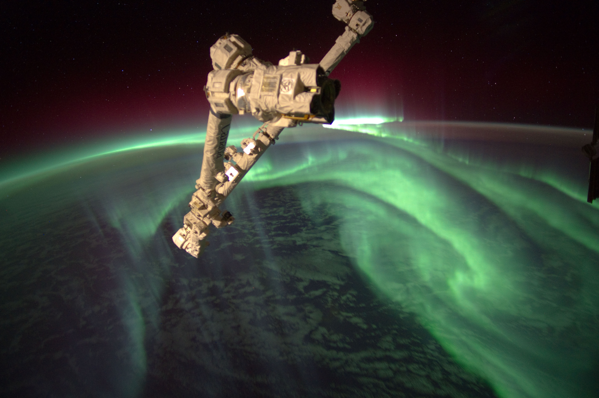(NASA)
Magnetotactic bacteria
Woods Hole Oceanographic Institute
Protection from space weather
A giant magnet at the north pole?
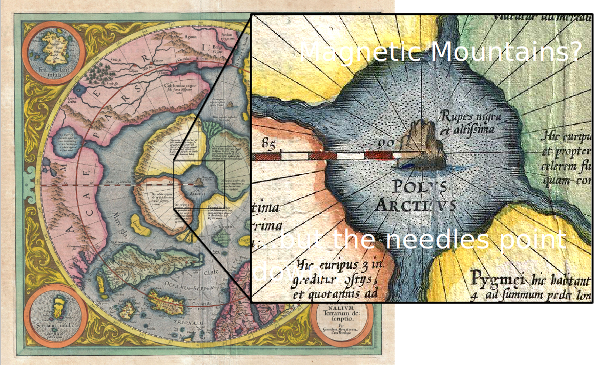A giant magnet at the center of the earth?
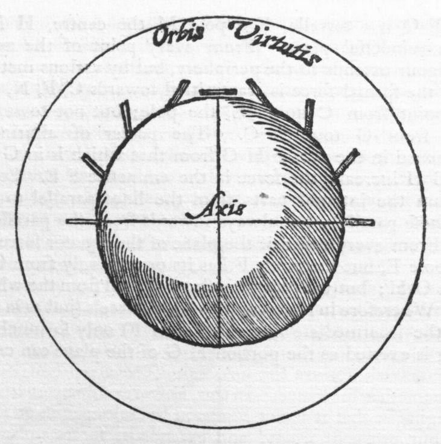Earth's historical magnetic field
Jackson et. al., 2000
Seafloor spreading
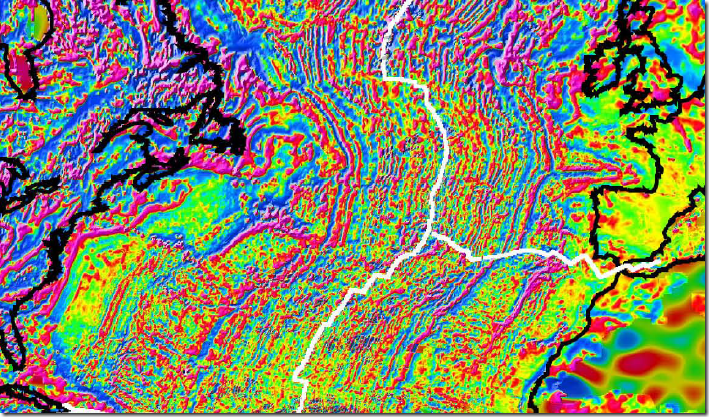The magnetic field reverses
Meanwhile, from seismology and cosmochemistry

However, the core of Earth is really hot!
Over 2000 C, well above the Curie temperature
It does seem to be moving, though
Jackson et. al., 2000
Detour: planetary formation
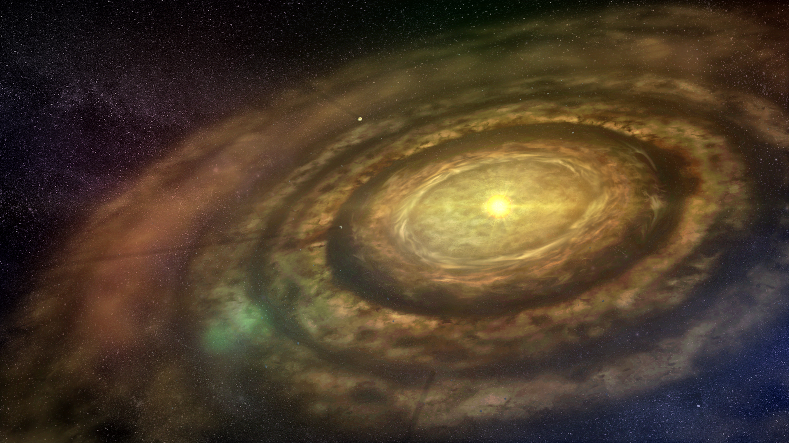Protoplanetary disk (NASA/JPL)
Planets start out hot!
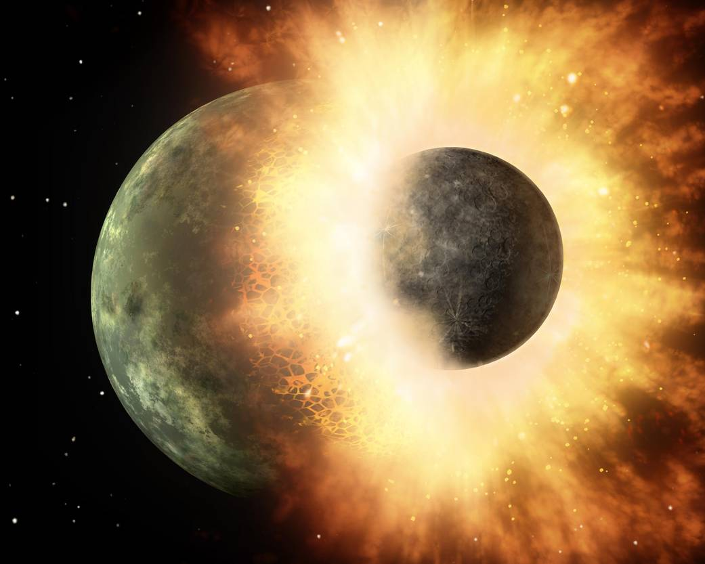(NASA/JPL)
Hot things want to cool.
What is a dynamo?
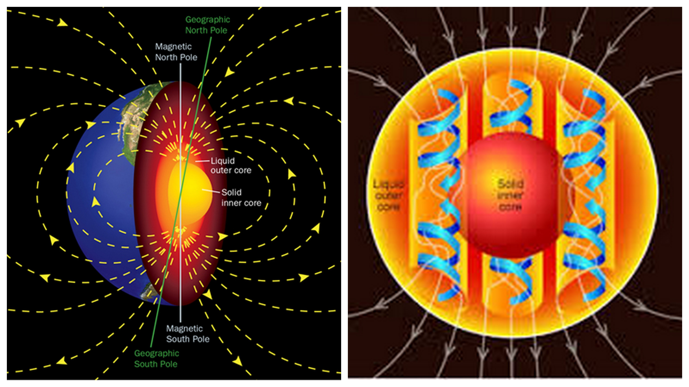Numerical dynamo model
Courtesey of Hiro Matsui
Mercury

Yes!
Venus
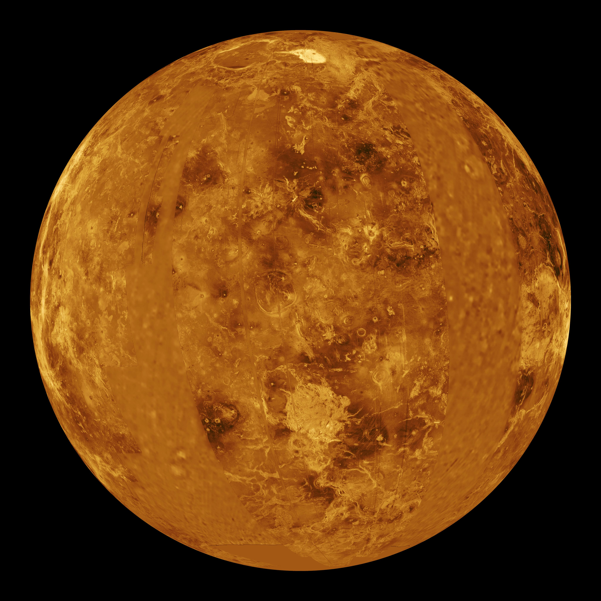No!
Earth

Yes!
Mars
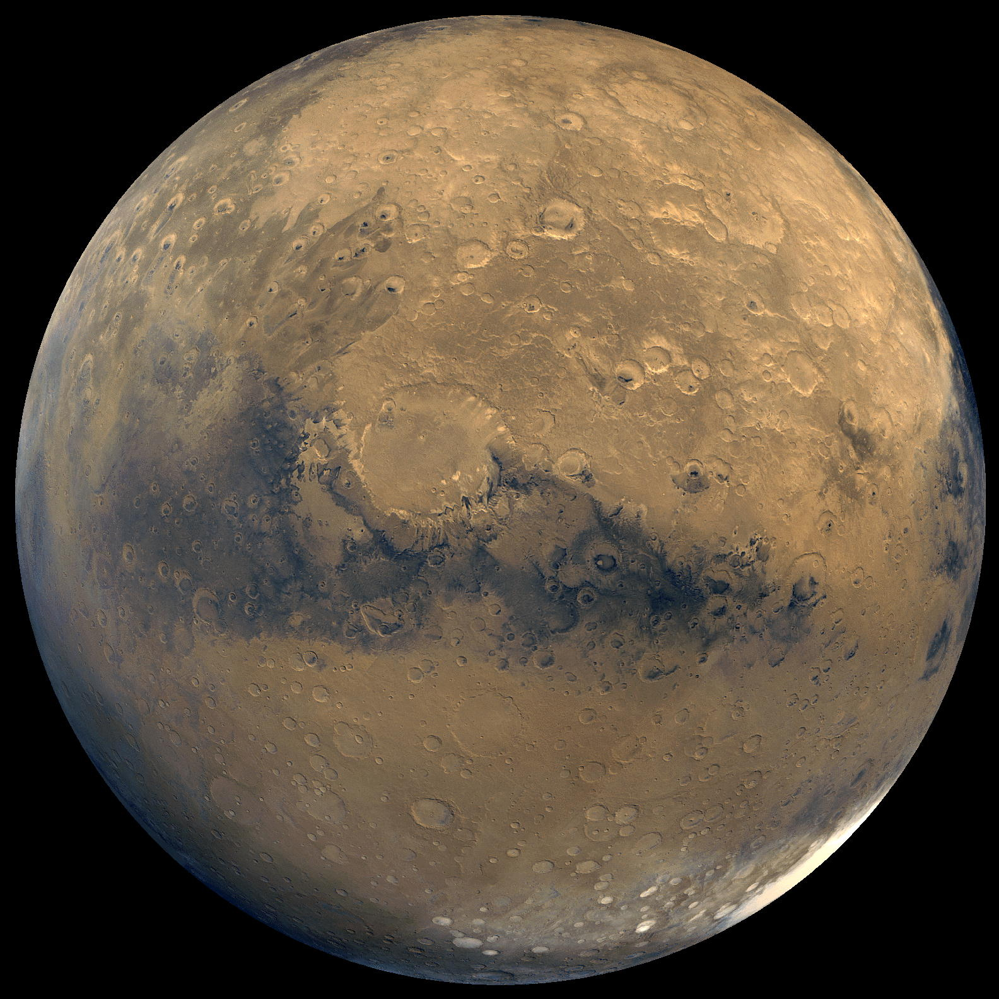No!
Jupiter
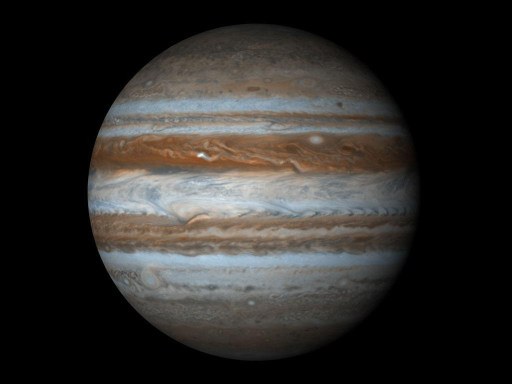Yes!
Saturn
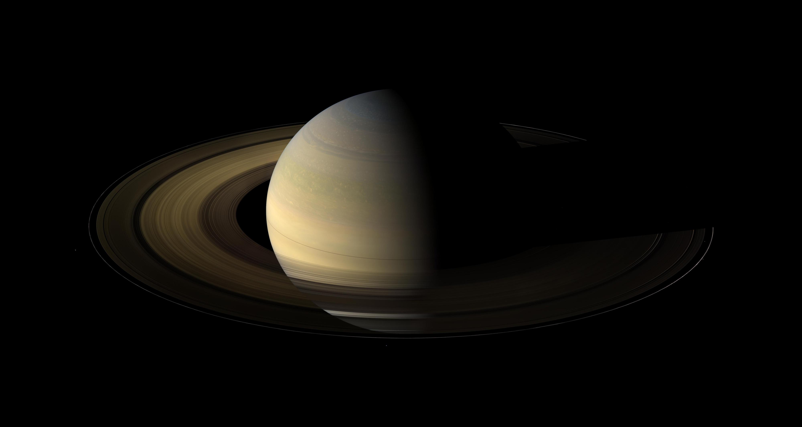Yes!
Uranus
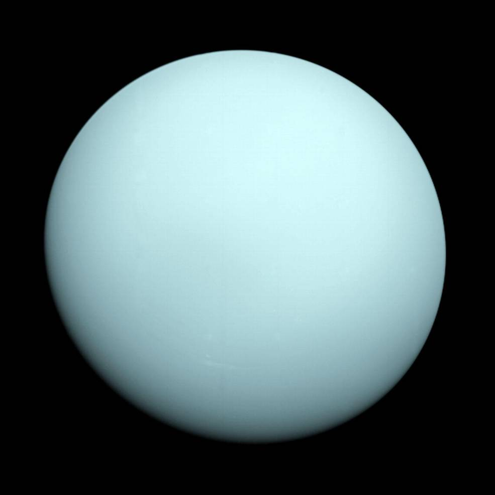Yes!
Neptune